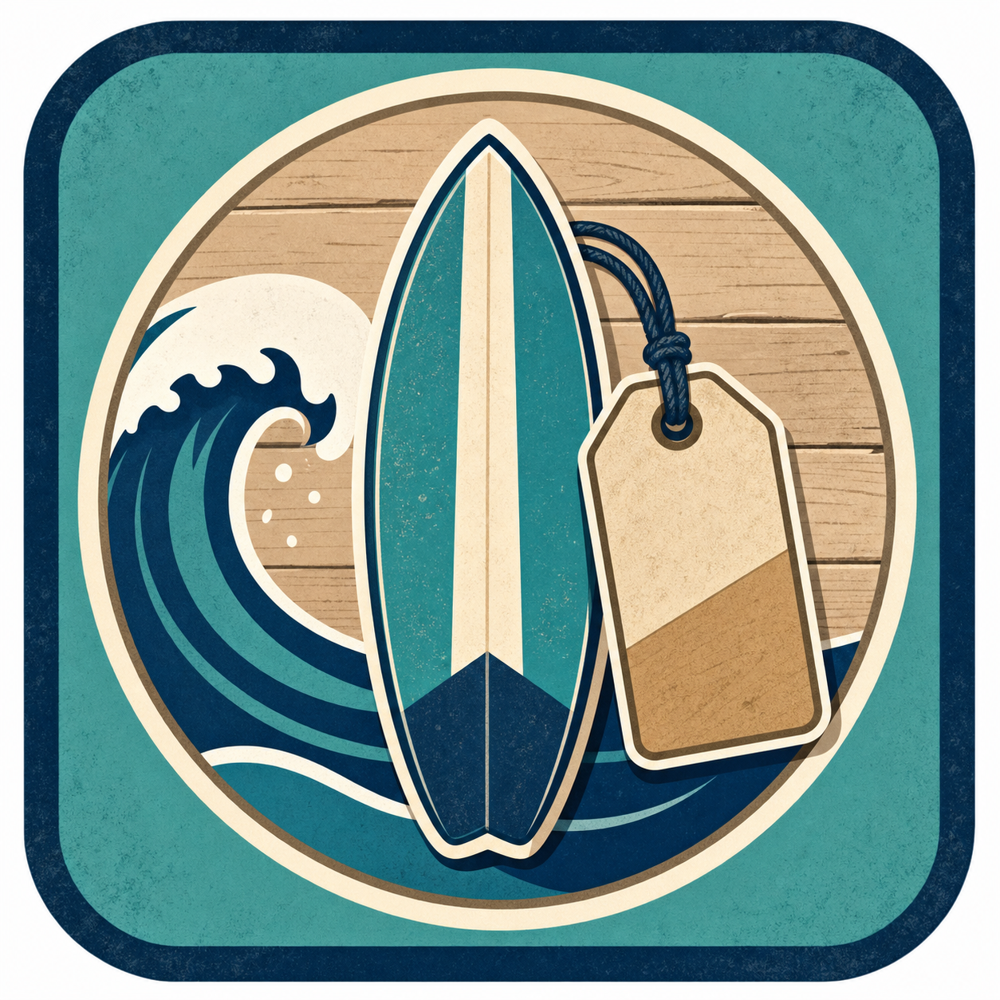

BUS 123 · Introduction to Business · M01 · L02
Why digital fluency is no longer optional — and how it shapes every career path.
Prof. Evitts · Gerrish School of Business · Endicott College
A day in your life
Every one of these is built and maintained by someone who understands both the business problem and the tool.
Learning Objectives
U.S. job postings · 2025
80%
require intermediate-or-better spreadsheet skills before an employer will even look at your application.
Not bonus. Not nice-to-have. Required.
Core distinction
Passive user
Uses what others configured.
Opens spreadsheets someone else built. Types numbers into cells with formulas already in place. Saves files wherever they land. Calls IT when something breaks. Asks: "What does this button do?"
Professional operator
Builds tools to solve problems.
Designs the spreadsheet from a blank sheet. Writes formulas — and knows what they calculate. Names files so a team can navigate them. Troubleshoots first. Asks: "Which tool is right for this problem?"
Part 1 of 3
Every industry. Every role. Every decision.
Tech across sectors
The specific tools vary by industry. The underlying skills — build, organize, communicate with data — don't.
Case study companies

Retail
Tidal Goods Co.
Inventory, markup, COGS, and margin analysis.
Advisory
Meridian Advisory
TVM, taxes, payroll, and loan amortization.
Events
Anchor & Oak
Breakeven, cash flow, and scenario pricing.
Healthcare
Harborside Medical
Payer mix, payroll, and budget variance.
Part 2 of 3
And what it costs to stay where you are.
Digital fluency spectrum
Modeling & automationRare skill
Premium pay
Data analysisAdvanced
Next layer
Formula buildingDifferentiator
BUS123
Spreadsheet useMost business roles
BUS123
File managementExpected
BUS123
Basic literacyEvery job
BUS123
⚠ Common mistake
"I've typed in Excel" ≠ building a formula that calculates payroll for six employees with different pay structures.
"I've made a slide deck" ≠ producing a presentation a client or executive will show their board.
"I know how to save files" ≠ running a file system a team can navigate without your help.
Before / After
Before the spreadsheet era
With modern tools
Career impact
Hiring
Candidates who demonstrate Excel proficiency in interviews advance further in finance, ops, and management roles.
First 90 days
Digitally-fluent new hires spend less time on admin and more on visible, high-impact work. Managers notice.
Promotions
Building something — a model, a report, a dashboard — that others use is a consistent driver of early promotion.
Entrepreneurship
If you start your own business, Excel is the first tool you'll need. Budgets, pricing, payroll — all live there first.
Part 3 of 3
Habits, the honest AI take, and activities before you leave.
AI fluency
AI is good at
AI is not good at
The people who use AI most effectively are the ones who understand the underlying work well enough to verify what it produces.
Tech habits
Activity · 8 min individual · share with partner
Module 01 wrap-up
✓ L01
Software Essentials
Microsoft 365 installed. OneDrive synced. BUS123 folder structure live.
✓ L02
Course Introduction
Course structure: INTRO → EXCEL → MATH. Case study businesses introduced.
✓ L02
Tech in Business
Passive user vs professional operator. Why digital fluency differentiates.
Exit ticket · 3 min · notecard or Canvas
Name one technology problem you'll face in your intended career — and which Microsoft 365 app would solve it.
There is no wrong answer. The point is starting the habit of connecting real problems to specific tools.
Coming next · EXCEL-M01
Blank sheet. Blank cell. Your first formula.
The semester of building starts here.
Complete any outstanding homework before next class